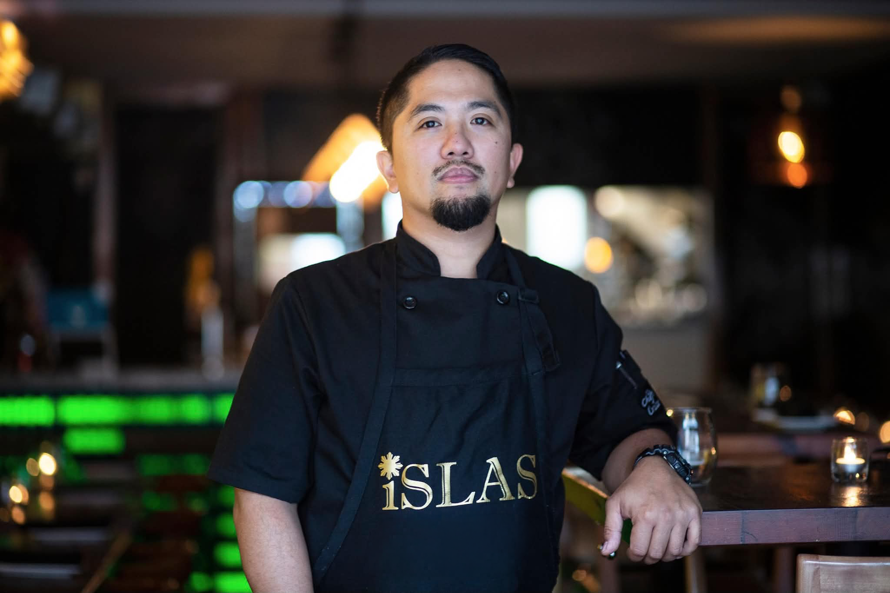

Eight years operating iSLAS Filipino BBQ & Bar in Toronto. Co-founder of Islas Tech. Available for events, pop-ups, speaking engagements, and culinary collaborations rooted in Filipino heritage and the lived reality of small business operations.

Marc Buenaventura is a Filipino-Canadian chef and co-founder based in Toronto. In December 2017, he opened iSLAS Filipino BBQ & Bar with his wife Mariel Buenaventura — building it from scratch into a two-location operation with 20+ staff, mid-to-high six-figure annual revenue, and three annual Night Market events with 30–60 vendors.
Across eight years, iSLAS survived COVID as a two-person team and earned recognition from BlogTO, Foodism, Toronto Life, NOW Toronto, and the Philippine Consulate in Toronto during Filipino Restaurant Month 2022 and 2025.
"The first education in flavour wasn't a kitchen. It was my mother calling me over to taste a dish before it left her hands."
That intuition — taste, balance, story — runs through every plate Marc has cooked since. In 2025, after pausing iSLAS operations, Marc and Mariel traveled through the Philippines and Japan, reconnecting with the source of the cuisine and rethinking what comes next.
Now, Marc is the co-founder and Operator-in-Residence of Islas Tech — the back-office operating system Mariel is building for small business operators — while continuing to cook, host, write, and represent Filipino culinary heritage through bespoke events, pop-ups, media work, and a book launching in 2026.
Formalizing eight years of professional culinary leadership through Skilled Trades Ontario's Trade Qualifier pathway.
The Red Seal is Canada's interprovincial standard for skilled trades. For Cook, it formally recognizes 8,000+ documented hours of professional kitchen work and successful completion of an industry-developed exam at 70% pass.
Marc is pursuing certification through the Trade Qualifier pathway — the route designed for experienced operators who have built their craft on the floor rather than through a formal apprenticeship.
The certification will formalize what eight years of operating iSLAS already demonstrated: the discipline, food safety standards, kitchen leadership, and operational rigor required to run a working professional kitchen across two locations.
For event organizers, employers, and collaborators, Red Seal Cook status will provide an additional layer of verified professional credibility — alongside the documented record of BlogTO, Foodism, Toronto Life, and Philippine Consulate recognition.
Opened in Toronto with Mariel. Built from zero — permits, suppliers, staff, POS systems, kitchen operations. Scaled to two locations, 20+ staff, mid-to-high six-figure revenue. Hosted three annual Night Market events with 30–60 vendors. Survived COVID as a two-person team.
Co-founded the back-office operating system for small business operators. Grounds the product in real operating reality — ensuring every product decision reflects how a working kitchen, a working floor, and a working SME actually function under pressure.
Available for bespoke private dinners, pop-ups, book-launch collaborations, and culinary education programs rooted in Filipino heritage and small-operator storytelling. Open to media work, food writing, and select brand partnerships.
Marc speaks on the themes that emerged from eight years operating iSLAS — culinary heritage, the immigrant operator experience, and the gap between cooking well and running a business well.
Filipino culinary tradition through a Canadian table. The story behind the regional dishes, the techniques, the ingredients. Why representing a cuisine well requires more than a menu — it requires understanding where the flavour comes from and who it serves.
The 2025 research journey through the Philippines and Japan. What returning to the source taught a Filipino-Canadian chef about authenticity, evolution, and the discipline of cooking with intention rather than imitation.
What it actually takes to open and run a small business as a Filipino-Canadian operator. The systems no one teaches you. The networks you build from scratch. The reality of scaling a business while still cooking your own food.
Why cooking well is not enough. The operational reality of running a restaurant — permits, suppliers, payroll, POS, customers, staff. How those eight years of friction became the foundation for Islas Tech and the system Marc co-founded.
Marc is available for bespoke private dinners, pop-up collaborations, and book-launch events through 2026 and beyond. Every engagement is built around the host, the story, and the room — not a fixed menu or template.
Intimate seated dinners (8–30 guests). Designed around the host's narrative — celebration, milestone, gathering, intention.
Partner with restaurants, venues, brands, or community organizations on time-bound Filipino-Canadian culinary takeovers.
Themed multi-course experiences tied to the launch of Islas: Stories from the Islands & the Table (2026).
All inquiries handled directly. Lead time, format, capacity, and pricing are confirmed on a per-event basis.
Inquire About an EventMarc partners with brands, restaurants, community organizations, media outlets, and educators on projects that align with his story — Filipino-Canadian heritage, the small-operator experience, and the discipline of cooking with intention.
Selective rather than scaled. Every collaboration is evaluated for fit, story, and integrity.
Interviews, podcasts, food journalism, contributing writing, recipe development for editorial.
Aligned with Filipino-Canadian cultural identity, small-operator storytelling, or culinary craft.
Cultural events, immigrant entrepreneurship programs, Filipino heritage initiatives.
High school and college culinary demonstrations, mentorship, workshops. (Previously: Canada Takeout GTA program.)
A culinary memoir by Chef Marc Buenaventura. Not a cookbook. A founder's journal — eight years of building iSLAS Filipino BBQ & Bar as a Filipino-Canadian operator. The trial, the systems, the staff, the customers, the recipes that survived two locations and a pandemic.
Part memoir, part operator's playbook, part love letter to the cuisine that raised him.
For events, collaborations, media inquiries, or speaking engagements — please reach out directly. Marc responds personally.
Connected projects: